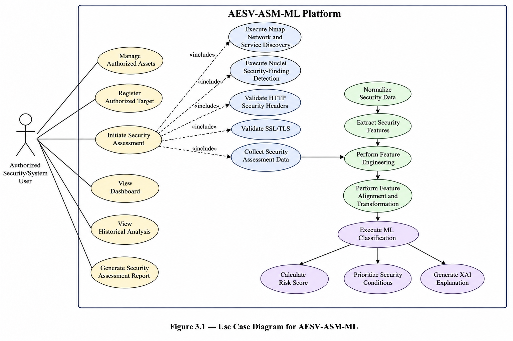
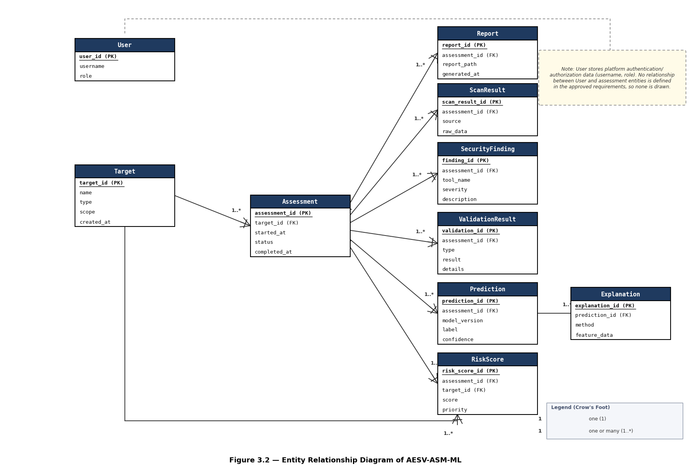
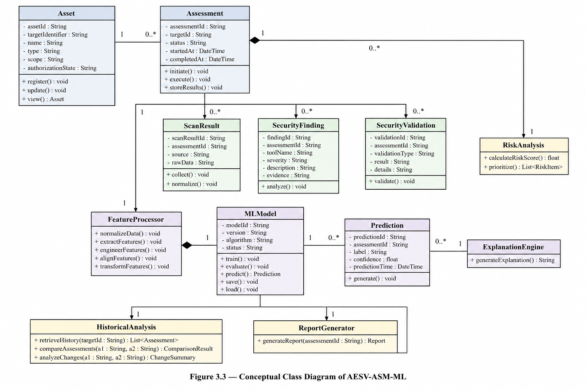
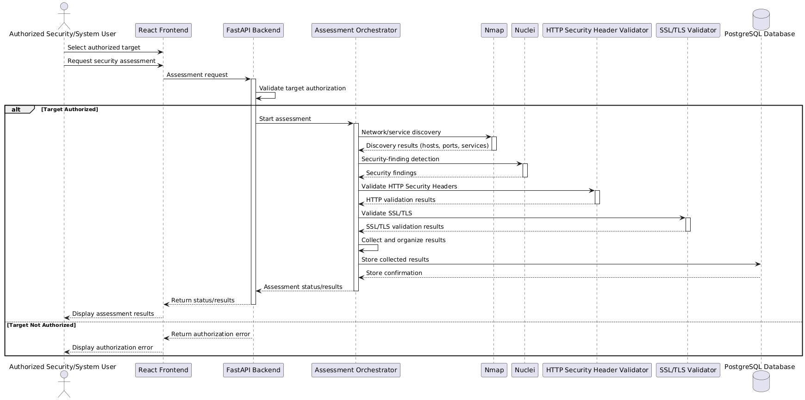
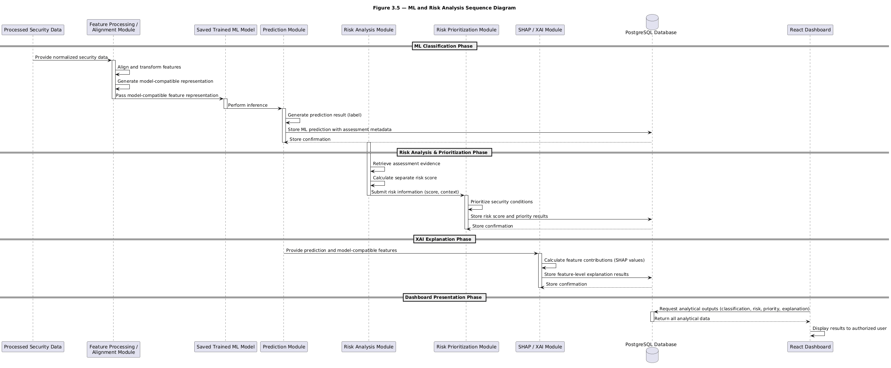
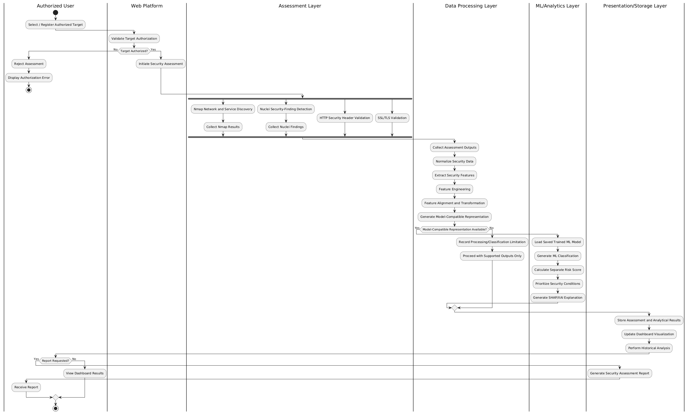
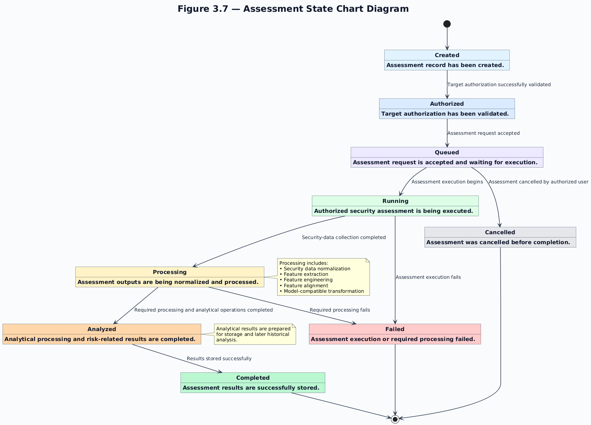

الجمهورية اليمنيه — وزارة التعليم العالي والبحث العلمي
Graduation Project (1)Midterm Assessment2026
AESV-ASM-ML
Autonomous Enterprise Security Validation
and Attack Surface Management Platform
Using Machine Learning
منصة التحقق المستقل من أمن المؤسسات وإدارة سطح الهجوم باستخدام التعلم الآلي
أعضاء الفريق
ياسر المنبهيناصر علي مسليقمحمد شماخيوسف الكوكبانياسامه المطري
إشراف:د. عمار الزهاري
العام الدراسي 2026
مقدمة
Introduction
السياق العام
تعتمد المؤسسات الحديثة على أنظمة رقمية متشابكة من خوادم وتطبيقات وخدمات شبكية، مما يُوجِد سطحَ هجوم واسعاً ومتنامياً يصعب رصده يدوياً.
يُشدد إطار NIST CSF 2.0 على ضرورة الوعي بالأصول وترتيب الأولويات وفق المخاطر كأساس لأي برنامج أمني ناضج.
المشهد الحالي للأدوات
توفر أداة Nmap اكتشاف الأصول والخدمات الشبكية، فيما تتخصص Nuclei في الكشف عن الثغرات عبر قوالب CVE.
غير أن مخرجات هذه الأدوات تبقى مُجزَّأة وغير مترابطة، ولا تُنتج تصنيفاً موحداً للمخاطر مدعوماً بالذكاء الاصطناعي.
دور التعلم الآلي (ML) وفرصة الربط
تُسند التجارب الحالية فئة شدة للثغرة فقط. ويمكن لمحرك المخاطر المخطط أن يجمع هذا التصنيف مع التعرض وأهمية الأصل ونتائج الفحوص؛ وهذه المدخلات ليست جزءًا من تصنيف NVD.
تستهدف الخطة ربط اكتشاف الأصول وفحصها وتصنيف الشدة في منصة موحدة ضمن بيئة أكاديمية آمنة ومصرح بها. ويظل تفسير SHAP خيارًا مخططًا، لا نتيجةً للتجارب الحالية.
11
طبقة معمارية
3
تجارب تصنيف مقارنة
23
متطلباً وظيفياً
SHAP
تفسير مخطط للنموذج
مشكلة البحث
Problem Statement
!
على الرغم من توفر أدوات متخصصة مثل Nmap وNuclei، يبقى التحدي في توحيد نتائج الفحص مع تحليل المخاطر وإدارتها ضمن منصة تدعم فهم النتائج وتحديد أولويات المعالجة.
01
مخرجات الفحص
أدوات متخصصة ومصادر بيانات
Nmap اكتشاف الأصول والخدماتNuclei فحص أمني بالقوالبNVD بيانات تدريب الثغراتCVSS مصدر اشتقاق فئات الشدة
مصادر ونتائج تحتاج إلى معالجة وربط
›التحدي البحثي
02
مشكلة التكامل
من بيانات الفحص إلى تحليل متسق
×
كيف نوحّد نتائج الفحص ونوائم خصائصها مع النموذج، ثم نتحقق من قيمة تحليلية لا تقتصر على إعادة إنتاج فئات مشتقة من CVSS؟
›نموذج أولي
03
هدف AESV-ASM-ML
تكامل التحليل ودعم القرار
AI
Align → Classifyمواءمة ثم تصنيف ودعم الأولويات
تجارب NVD منجزة؛ تكامل التشغيل مخطط
محاور المشكلة
ما ينبغي أن يحققه المسار المقترح
01
مواءمة الخصائصاتساق بيانات التشغيل ومدخلات النموذج
02
التحقق من القيمةتقييم يتجاوز مرجع CVSS المشتق
03
دعم القرارفصل الشدة عن مخاطر الأصل
السؤال البحثي الرئيسي
كيف يمكن تطوير منصة موحدة توائم نتائج الفحص مع خصائص النموذج، وإلى أي مدى يمكن للتعلم الآلي تصنيف شدة CVE من الوصف وCWE وبيانات المنتج دون إدخال CVSS، مع دعم الأولويات وتقييم موثوقية النتائج وقابليتها للتفسير؟
أهمية المشروع
Project Significance
🎓الأهمية الأكاديمية
تكامل ASM + التقييم الأمني + ML + XAI في نموذج أولي واحد
مقارنة ثلاث تجارب لقياس أثر النص وCWE وبيانات المورّد/المنتج
تفسير ميزات Logistic Regression بأسلوب ملائم للمصنف الخطي (ضمن العمل المخطط)
استراتيجية محددة لتوافق الميزات بين بيانات التدريب والتطبيق الفعلي
⚙️الأهمية التقنية
مساران واضحان: تدريب NVD دون اتصال، وفحوص تشغيلية للأصول المصرح بها
معمارية مكونة من 11 طبقة مع واجهات محددة بين المكونات
صيغة تسجيل المخاطر المُصمَّمة بمعاملات ترجيح ذات مبررات واضحة
تكامل Nmap + Nuclei + HTTP/TLS + ML في منصة واحدة
🔬الأهمية العملية
بيئة دعم قرار للباحثين وطلاب الأمن السيبراني
تُمكّن من إجراء تقييم أمني كامل في بيئة محلية مُصرَّح بها
لوحات تحكم تفاعلية مع مقارنة تاريخية للتقييمات
شرح آلي لقرارات التصنيف لدعم فهم الطلاب
📚الأهمية التعليمية
تطبيق مفاهيم الأمن السيبراني والشبكات والـ ML والقواعد البيانات وتطوير الويب في آنٍ واحد
يُجسّد الفجوة بين البحث النظري والتطبيق العملي المتكامل
يُقدّم نموذجاً قابلاً للتكرار لمشاريع تخرج مستقبلية مماثلة
يعزز الفهم الأخلاقي لحدود الاختبار الأمني المُصرَّح به
أهداف المشروع
Project Objectives
الهدف العام (General Objective)
تصميم وتطوير منصة ويب محلية متكاملة ومعيارية تربط بين اكتشاف الأصول وإدارة سطح الهجوم والتقييم الأمني وتحليل المخاطر المعتمِد على التعلم الآلي وشرح القرارات عبر XAI، مع تقديم ذلك كله من خلال لوحات تحكم موحدة وتقارير تاريخية.
SO-01 🎨 مصمَّم
اكتشاف الأصول والخدمات والمنافذ وإصداراتها عبر Nmap وحفظها في قاعدة البيانات
SO-02 🎨 مصمَّم
تصنيف الأصول المُكتشَفة وتحليل تعرّضها وتتبّع التغييرات التاريخية (إدارة سطح الهجوم)
SO-03 🎨 مصمَّم
تشغيل Nuclei لاكتشاف الثغرات الأمنية وربطها بمعرّفات CVE
SO-04 🎨 مصمَّم
التحقق من رؤوس HTTP الأمنية وشهادات SSL/TLS وصلاحيتها وإصداراتها
SO-05 🎨 مصمَّم
تطبيع البيانات الأمنية واستخراج الميزات وتحويلها إلى تمثيل متوافق مع نموذج ML
SO-06 🎨 مصمَّم
مقارنة تجارب CVSS المرجعية والميزات النصية باستخدام Macro-F1، واختيار Logistic Regression وفق التحقق
SO-07 🎨 مصمَّم
تطبيق أفضل نموذج في وقت التشغيل لتصنيف خطورة الثغرات: Low / Medium / High / Critical
SO-08 🎨 مصمَّم
حساب درجة المخاطر وفق الصيغة المُصمَّمة وترتيب الأولويات حسب النتيجة
SO-09 🎨 مصمَّم
تفسير مساهمة الميزات في تصنيف Logistic Regression، مع فصلها عن تقييم المخاطر التشغيلية
SO-10 🎨 مصمَّم
توفير لوحات تحكم تفاعلية وتقارير قابلة للتصدير مع المقارنة التاريخية بين التقييمات
نطاق المشروع
Project Scope
✓ ضمن النطاق الوظيفي (14 وظيفة)
إدارة الأصول والأهداف
اكتشاف الشبكة والخدمات (Nmap)
الكشف الأمني عن الثغرات (Nuclei)
التحقق من رؤوس HTTP الأمنية
التحقق من SSL/TLS
معالجة البيانات والتطبيع
هندسة الميزات
تدريب وتقييم تجارب تصنيف الشدة
تصنيف خطورة الثغرات (ML)
تسجيل المخاطر وترتيب الأولويات
تفسير النموذج (SHAP/XAI — مخطط)
لوحات تحكم تفاعلية
التحليل التاريخي والمقارن
توليد التقارير وتصديرها
✗ خارج النطاق (محدودية أخلاقية)
أي مسح غير مُصرَّح به خارج البيئة المختبرية
الاستغلال التلقائي للثغرات
تطوير أدوات استغلال أو Exploits
إنشاء برامج ضارة (Malware)
سرقة أو استخراج بيانات الاعتماد
🌐 بيئة التشغيل
مختبر محلي مُسيطَر عليه ومُصرَّح به
أهداف مُعدَّة خصيصاً للاختبار الأكاديمي
لا يوجد اتصال بالأنظمة الإنتاجية الحقيقية
الدراسات السابقة
Related Studies
Husak & Sadlek (2025)
تحديات ASM وتعداد الأصول
التركيز: إدارة سطح الهجوم وتحديات التعداد
⚠ النطاق المعروض يركز على ASM أكثر من تكامل ML
→ يدعم توجيه إدارة الأصول المُصرَّح به
Ragheb & Al-Omary (2025)
رؤية سطح الهجوم الخارجي
التركيز: الرؤية الخارجية فقط لسطح الهجوم
⚠ تركيز الدراسة على الرؤية الخارجية لسطح الهجوم
→ يدعم تعريف مشكلة إدارة الأصول
Tundis et al. (2018)
مراجعة أدوات فحص الثغرات
التركيز: مراجعة أدوات الفحص الأمني
⚠ مراجعة أدوات الفحص دون مسار ML موحد في نطاقها
→ يدعم دور Nmap + Nuclei التكميلي
Chahal et al. (2022)
تقييم الثغرات بمساعدة ML
التركيز: ML لتقييم الثغرات دون تكامل أدوات
⚠ تركيز على ML دون ربط تشغيلي في النطاق المعروض
→ يدعم مسار التدريب دون اتصال
IEEE Access Survey (2024)
ML في الأمن السيبراني
التركيز: مسح شامل لتطبيقات ML في الأمن
⚠ مسح عام لا يقيّم مسار المنصة المقترح تحديدًا
→ يدعم الطبقة التحليلية للمشروع
SHAP-based XAI Study (2025)
نظام IDS قابل للتفسير باستخدام SHAP
التركيز: IDS قابل للتفسير عبر SHAP
⚠ IDS بمهمة تختلف عن تصنيف شدة الثغرات
→ يدعم استخدام SHAP في السياق الأمني
⌕ الفجوة البحثية
خلاصة مقارنة الدراسات المعروضة
01 · ما تناولته الدراسات
إدارة الأصول، والفحص الأمني، وتطبيقات تعلم الآلة، وتفسير بعض المخرجات.
02 · الفجوة المستهدفة
مواءمة نتائج الفحص الفعلي مع ميزات النموذج، وربط التحليل بسياق الأصل والأولويات.
03 · استجابة AESV-ASM-ML
تجارب تصنيف NVD منجزة؛ تكامل التشغيل والتفسير بـ SHAP والمتابعة التاريخية مسارات مخططة.
الفجوة صياغة تركيبية للدراسات المستعرضة، وتحتاج إلى توثيق المقارنة بمصادرها الأصلية؛ ولا تدّعي أن مكوّنات المشروع منفردة جديدة.
الحل المقترح — منصة AESV-ASM-ML
Proposed Solution
◎
AUTHORIZED SCOPEأصول وأهداف مصرح بها فقط
01 الاكتشاف والتحقق الأمني
01 / ASSETS
اكتشاف الأصول
المضيفون، المنافذ، الخدمات والإصدارات
Nmap02 / FINDINGS
الكشف عن الثغرات
فحص أمني باستخدام القوالب
Nuclei03 / CHECKS
فحوص HTTP و TLS
مؤشرات تحقق وسياق أمني للأصل
HTTP · SSL/TLS
04 / NORMALIZE
معالجة البيانات وتوحيدها
ربط نتائج الفحص بالأصول والسياق التاريخي
↔
ML
OFFLINE · NVD
مسار تجارب تصنيف الشدة
بيانات NVD←TF-IDF + CWE + بيانات وصفية←Logistic Regression
LowMediumHighCritical
التجارب على بيانات NVD أُنجزت؛ دمج المصنّف مع التشغيل ما زال مخططًا.
RS
RUNTIME · PLANNED
سياق الأصل وترتيب الأولويات
التعرّضأهمية الأصلنتائج الفحصالسجل التاريخي
↗
تقييم مخاطر الأصلمسار سياقي مقترح، مستقل عن فئة شدة الثغرة
▤
لوحة المتابعة والتقاريرمخرج معماري مستهدف — ليس دليلًا على اكتمال التشغيل
PROPOSED PLATFORM
المنهجية
Development Methodology
منهجية تجمع البحث التجريبي التطبيقي وتطوير النظام التكراري في 14 مرحلة.
منجزمخطط / قيد الاستكمال
تقدم المنهجية
9 / 14
01
تحديد المشكلة
Problem Identificationمنجز02
مراجعة الأدبيات
Literature Reviewمنجز03
تحليل المتطلبات
Requirements Analysisمنجز04
تصميم النظام
System Designمنجز05
اختيار البيانات
Dataset Selectionمنجز06
تجهيز البيانات
Data Preparationمنجز07
الاستكشاف والتحليل
Exploratory Analysisمنجز08
تطوير نموذج ML
Model Developmentمنجز09
تقييم التجارب
Model Evaluationمنجز · A / B / C10
تفسير النموذج
SHAP / Explainabilityمخطط11
تكامل المنصة
Platform Integrationمخطط12
اختبار النظام
System Testingمخطط13
تحقق وتحليل إضافي
Further Validationقيد الاستكمال14
التوثيق النهائي
Final Documentationمخطط
01
مسار تجارب التعلم الآلي · تقييم أولي منجز
بيانات NVD ← تجهيز وميزات ← A/B/C عشوائي ومجمّع، مع تقييم زمني أولي كشف ضعف التعميم.
OFFLINE · NVD02
مسار تكامل المنصة وقت التشغيل · مخطط
تكامل فحوص الأصول والأمن مع النموذج والتقارير؛ لم يُعرض بوصفه تنفيذًا مكتملًا.
PLANNED · RUNTIME
مجموعة البيانات ومنهجية التعلم الآلي
Dataset & ML Methodology
OFFLINE TRAINING DATANational Vulnerability Database (NVD)قاعدة NIST الوطنية للثغرات
واجهة الجمعNVD CVE API 2.0
ملف البيانات المعالجnvd_vulnerability_dataset.csv
نوع البياناتنصوص + حقول فئوية منظمة
السجلات المعالجة398,149 خام ← 297,687 صالحًا18 عمودًا في CSV النهائي
وصف الثغرة Descriptionنوع الضعف CWEالمورّد Vendorالمنتج Productالإصدار Version / CPEخصائص CVSS مصدر التسمية / تجربة A
توزيع الفئاتLow 3.61%Medium 44.00%High 40.16%Critical 12.24%
01NVD DataCVE records
02Dataset Prepclean + label
03Feature EngineeringCWE + metadata
04TF-IDF / Categoriestext + encoded fields
05Logistic Regressionmulticlass classifier
06Severity ClassLow → Critical
07Risk Priorityoperational context
⚠
تُشتق الفئات من CVSS؛ ويُستبعد من ميزات B وC. فئة Low تمثل 3.61% فقط. بيانات NVD ليست نتائج فحوص Nmap أو Nuclei أو HTTP/TLS.
معمارية النظام الشاملة
Overall System Architecture — 11 Layers
اكتشاف الأصول وإدارة سطح الهجوم
Asset Discovery & Attack Surface Management
🔍 اكتشاف الأصول عبر Nmap
اكتشاف المضيفين (Host Discovery) عبر ICMP/TCP/UDP
فحص المنافذ وتحديد الخدمات وإصداراتها (-sV)
تحديد نظام التشغيل (-O) وبصمة المنتج
تخزين النتائج في قاعدة البيانات لكل تقييم
📊 مراحل إدارة سطح الهجوم
1. تعريف الأصول: مضيف، IP، منفذ، خدمة، إصدار، OS
2. تصنيف الأصول: نوع (خادم/خدمة/تطبيق) + حرجية (منخفض/متوسط/عالٍ/حرج)
3. تحليل التعرض: إمكانية الوصول الشبكي والخدمات المكشوفة وسطح الهجوم
4. التتبع التاريخي: مقارنة التقييمات — جديد / محدَّث / غير متغيّر
🛡 التحقق من رؤوس HTTP الأمنية
HSTS
CSP
X-Frame-Options
X-Content-Type
Referrer-Policy
Permissions-Policy
🔐 التحقق من SSL/TLS
صلاحية الشهادة وتاريخ الانتهاء
سلسلة المُصدِر ومطابقة اسم النطاق (CN/SAN)
إصدارات البروتوكول: TLS 1.2 / TLS 1.3
قوة مجموعات التشفير (Cipher Suites)
الثغرات المعروفة (POODLE, BEAST, Heartbleed)
الكشف عن الثغرات والتحقق الأمني
Vulnerability Detection & Security Validation
🔎 Nuclei — الكشف عن الثغرات
يستخدم Nuclei قوالب YAML للكشف عن أنماط ثغرات معروفة مرتبطة بـ CVE — هذا كشف وليس استغلالاً.
المخرجات: نتائج الثغرات، الخطورة، الأهداف المتأثرة، معرّف CVE، قالب YAML
الحد: جمع البيانات فقط في بيئة مُصرَّح بها — لا استغلال
الوجهة: معالجة البيانات الأمنية (ليس ML مباشرةً)
🔗 إثراء CVE → محاذاة الميزات
نتائج Nuclei تُربَط بـ NVD عبر CVE ID لاستخراج CWE وبيانات المنتج لتغذية النموذج
اكتشاف المضيفين والمنافذ والخدمات والإصدارات ونظام التشغيل
Vulnerability Detection
Nuclei
الكشف عن الثغرات بقوالب YAML مرتبطة بـ CVE
Security Validation
Python (HTTP/TLS)
التحقق من رؤوس HTTP الأمنية وشهادات SSL/TLS
ML Framework
Scikit-learn · Logistic Regression
تصنيف متعدد الفئات لميزات النص وCWE وبيانات المورّد/المنتج
Data Processing
Pandas + NumPy
هندسة الميزات والتحويل والتطبيع وتجهيز البيانات
Planned Explainability
SHAP · LinearExplainer
خيار مخطط للتحقق مع Logistic Regression؛ يشرح تصنيف الشدة لا محرك المخاطر
Model Persistence
Pickle / Joblib
حفظ النموذج المُدرَّب وخط أنابيب المعالجة وتحميله وقت التشغيل
Version Control
Git
إدارة الكود المصدري وتتبع التغييرات والتعاون بين أعضاء الفريق
Environment
بيئة محلية
محطة تطوير محلية + مختبر مُسيطَر عليه — لا بنية سحابية
دراسة الجدوى
Feasibility Study
🔧
الجدوى التقنية
جميع الأدوات مفتوحة المصدر ومتاحة
Nmap, Nuclei, Python, FastAPI, React متاحة
PostgreSQL, Scikit-learn, SHAP متاحة
بيانات NVD مجانية وعامة
متطلبات الأجهزة: محطة تطوير عادية
المكدس التقني محدد ومتوافق بالكامل
👥
الجدوى التشغيلية
المنصة مُصمَّمة كنموذج أكاديمي أولي
الفريق: خلفية في الأمن والبرمجة
بيئة مختبر محلية متاحة
التقييم مقتصر على أهداف مُصرَّح بها
إشراف أكاديمي من د. عمار الزهاري
خمسة أعضاء بتخصصات تكميلية
💰
الجدوى الاقتصادية
جميع الأدوات مفتوحة المصدر (صفر تكاليف)
مجموعة البيانات مجانية (NVD عامة)
أجهزة التطوير مملوكة للفريق
لا بنية تحتية سحابية مطلوبة
لا رسوم اشتراك أو استضافة
الاستثمار = وقت وجهد الفريق فقط
✅
الاستنتاج: المشروع جدير بالتنفيذ
المشروع ممكن تقنياً وتشغيلياً واقتصادياً ضمن نطاق النموذج الأكاديمي الأولي مع الموارد المتاحة للفريق.
تحليل النظام وتصميمه — مخططات UML
System Analysis & Design Evidence — 7 UML Diagrams
✅ مرحلة التصميم مكتملةانقر على أي مخطط للعرض الكامل
UCD

مخطط حالة الاستخدام Use Case Diagram
ERD

مخطط العلاقات (ERD) Entity-Relationship
CLD

مخطط الفئات Class Diagram
SQD

تسلسل التقييم الأمني Assessment Sequence
SQM

تسلسل ML وتحليل المخاطر ML & Risk Sequence
ACT

مخطط النشاط عالي المستوى Activity Diagram
STC

مخطط حالة التقييم State Chart Diagram
النموذج الأولي والتقدم الحالي
Prototype & Current Progress
23متطلبًا وظيفيًا FR
8متطلبات غير وظيفية NFR
10متطلبات أمنية SR
7مخططات UML مكتملة
تقدم المنهجية09 / 14
9 مراحل منجزة5 مراحل متبقية
COMPLETED
ما أُنجز
09
01تحديد المشكلة ومراجعة الأدبيات02تحليل المتطلبات الوظيفية وغير الوظيفية والأمنية03تصميم المعمارية ومخطط البيانات وواجهات API04إعداد 7 مخططات UML05اختيار المكدس التقني ومبرراته06اختيار بيانات الثغرات من NVD07تجهيز البيانات واستراتيجية محاذاة الميزات08تنفيذ تجارب تصنيف الشدة A / B / C09تقييم عشوائي ومجمّع وزمني أولي؛ تصميم صيغة المخاطر
NEXT PHASES
الخطوات المتبقية
05
10
تحقق إضافي من التعميماختبار مستقل لاحق بعد تجميد النموذج، وقياس الأداء على منتجات غير مرئية.
تحقق11
تحسين أداء الفئاتمعالجة ضعف Recall لـ Low وCritical دون تدهور غير مقبول في Macro-F1.
تحقق12
تفسير النموذج ودمجهتنفيذ SHAP والتحقق من توافق خط المعالجة ومخرجات المصنف.
مخطط13
بناء المنصة وواجهة الاستدلالتنفيذ API والتكامل والاختبارات؛ لم يبدأ التكامل التشغيلي بعد.
حدود التقدم الحالي: التقييمات التجريبية على NVD منفصلة عن تشغيل المنصة؛ لا توجد حاليًا واجهة/API استدلال، ولم يُنفذ SHAP أو تكامل أدوات الفحص.
مقارنة التجارب ونتائج الاختبار
Model Experiments — Test Macro-F1
تقسيم عشوائي طبقي · Logistic RegressionMacro-F1 على الاختبار
الاختبار العشوائي: تحسن C على B محدود (+0.0060). في C: الدقة 73.08%؛ Recall لـ Low 34.0% وCritical 52.7%.
مرجع A: يعيد إنتاج فئات مشتقة من CVSS؛ نتيجته المرتفعة ليست مقياسًا للتنبؤ المستقل من النص.
التحقق المجمّع: صفر تداخل للأوصاف المطابقة؛ C = 0.6347 Macro-F1 اختبار. المنتجات لا تزال مشتركة بين الأقسام.
التقييم الزمني · B + Linear SVM (C=1)تحقق Macro-F1 0.5480 → اختبار 0.4590؛ Recall على الاختبار: Low 12.69% وCritical 36.21%، دون حدّي 25% و40%.حدود التقييم والحالةاختبار زمني مستهلك؛ لا اختبار منتجات غير مرئية. لم يبدأ تكامل Nuclei/NVD/النموذج أو API، وSHAP غير منفذ.
كل هذه المقاييس لتصنيف شدة ثغرات NVD؛ ليست اختبارات لتكامل الفحص التشغيلي أو تقدير مخاطر الأصول.
التحديات والأعمال المتبقية
Challenges & Remaining Work
HIGH
محاذاة الميزات بين التدريب والتطبيق
مدخلات NVD الوصفية لا تطابق تلقائيًا مخرجات الفحص؛ يلزم تصميم واختبار مواءمة الميزات قبل أي استدلال تشغيلي.
HIGH
ضعف استدعاء Low وCritical
في الاختبار الزمني: Recall Low = 12.69% وCritical = 36.21%، ولم يتحقق الحد الأدنى المحدد لأي منهما.
MEDIUM
تعميم نموذج ML
اكتمل اختبار مجمّع للوصف بصفر تداخل للأوصاف المطابقة؛ لكن لم يُختبر التعميم على منتجات غير مرئية، والاختبار الزمني كشف تراجعًا.
MEDIUM
التكامل وواجهة الاستدلال
لم يبدأ دمج Nuclei ثم إثراء NVD والتنبؤ وربطه بمحرك المخاطر؛ ولا توجد حاليًا واجهة أو API استدلال.
حالة التحقق والأعمال المتبقية
✓ تجميع الأوصاف: صفر تداخل مطابق✓ تقييم زمني أولي: الاختبار لم يحقق حدّي Recall✓ جُرّبت أوزان الفئات: Recall أعلى وMacro-F1 أقل📋 تحسين أداء Low وCritical📋 اختبار مستقل على منتجات غير مرئية📋 تنفيذ SHAP والتحقق من تفسيره📋 بناء API وتكامل المنصة واختبارها📋 توثيق الاعتماديات وقابلية إعادة التشغيل
الخطة الزمنية للمشروع
Project Timeline — Two Semesters
مكتمل
قيد التنفيذ
مخطط
🎓 الفصل الأول — GP(1) الحالي
المراحل 1-2: تحديد المشكلة والأدبيات
✅ مكتمل
المرحلة 3: تحليل المتطلبات
✅ مكتمل
المرحلة 4: تصميم النظام وUML
✅ مكتمل
المراحل 5-9: بيانات NVD وتجارب التصنيف A/B/C
✅ نتائج أولية مكتملة
🚀 الفصل الثاني — GP(2) مُخطَّط
التحقق المجمّع ومراجعة تكرار الأوصاف
📋 مخطط
التحقق من التعميم ومقاييس كل فئة
📋 مخطط
المرحلة 10: تكامل SHAP
📋 مخطط
المرحلة 11: تنفيذ المنصة
📋 مخطط
المراحل 12-13: الاختبار وتحليل النتائج
📋 مخطط
المرحلة 14: التوثيق والتقرير النهائي
📋 مخطط
الخلاصة والخطوات القادمة
Conclusion & Next Steps
ملخص الإنجازات حتى التقييم النصفي
إكمال إعداد وتدقيق بيانات NVD، وتحليل المتطلبات والمعمارية ومخططات UML.
تقسيم عشوائي: C تحقق 0.6443 واختبار 0.6428؛ تقسيم مجمّع بالوصف: 0.6347.
التقييم الزمني الأولي: Macro-F1 اختبار 0.4590؛ Recall لـ Low وCritical دون الحدين.
التكامل التشغيلي وSHAP وواجهة/API الاستدلال لم تُنفذ بعد.
الخطوات القادمة الفورية
1
إجراء تقييم جديد مستقل بعد تجميد النموذج؛ الاختبار الزمني الحالي مستهلك
2
إنشاء اختبار منفصل حسب المنتج لقياس التعميم على منتجات غير مرئية
3
تحسين Recall لـ Low وCritical على بيانات التطوير والتحقق فقط
4
تقييم بدائل الأوزان والتكلفة مع مراقبة Macro-F1 والتقارب
5
تنفيذ SHAP والتحقق من تفسير Logistic Regression
6
بناء API للتنبؤ ثم دمج واختبار المنصة؛ التكامل لم يبدأ بعد
تمثل نماذج NVD الحالية خطوط أساس بحثية لتصنيف الشدة، لا أداة جاهزة للفرز الأمني التلقائي. يلزم تقييم مستقل وتحسين التعميم قبل ربطها بمسار التشغيل وتقييم مخاطر الأصول.